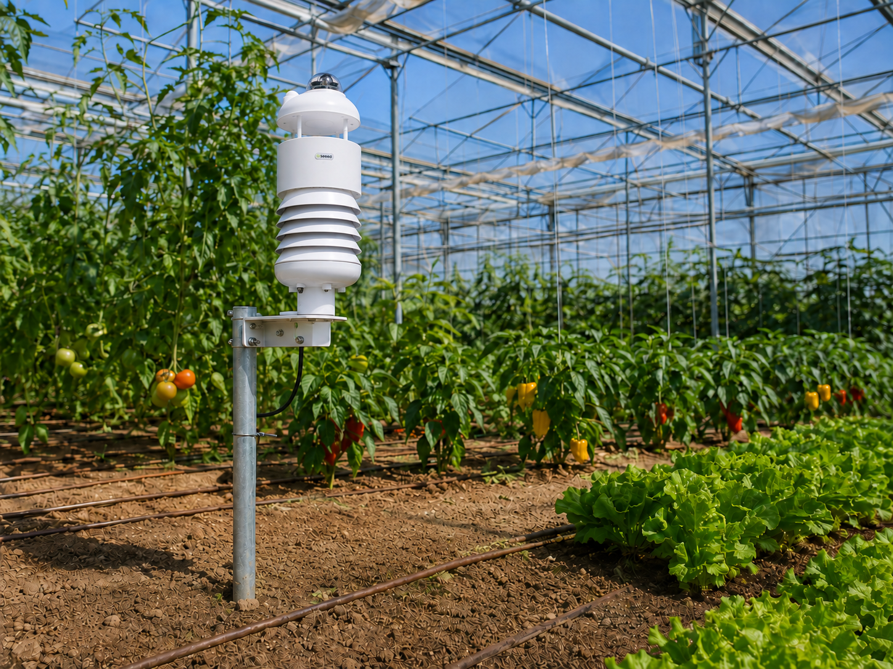
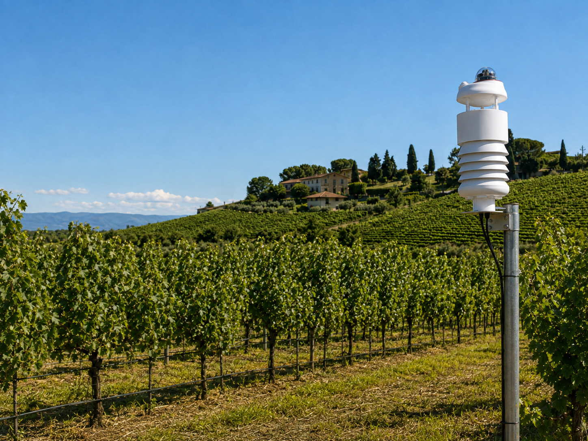
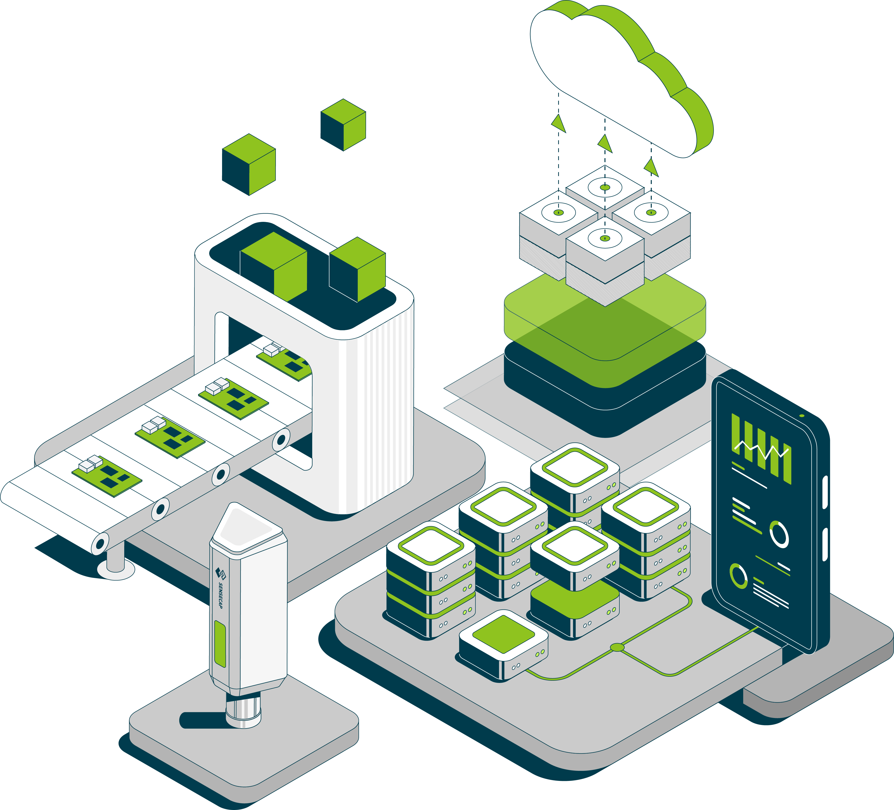
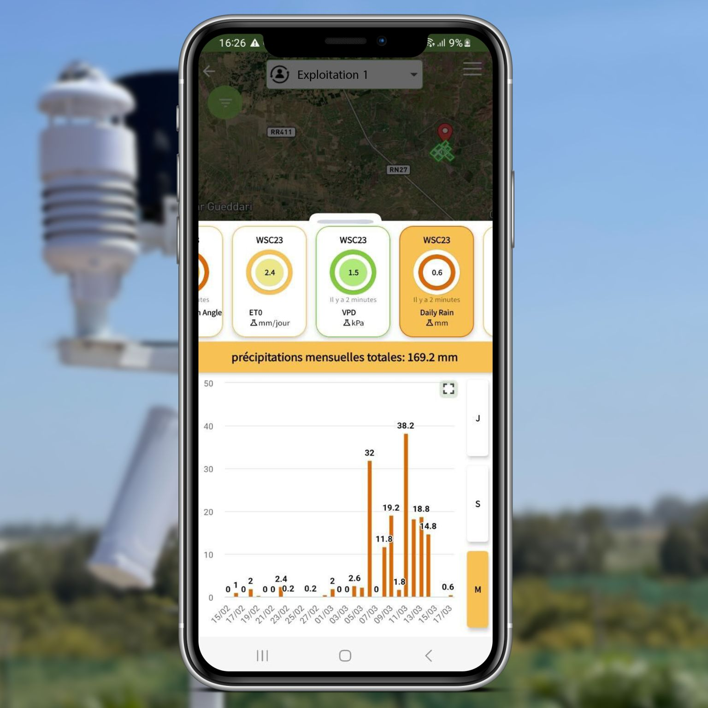
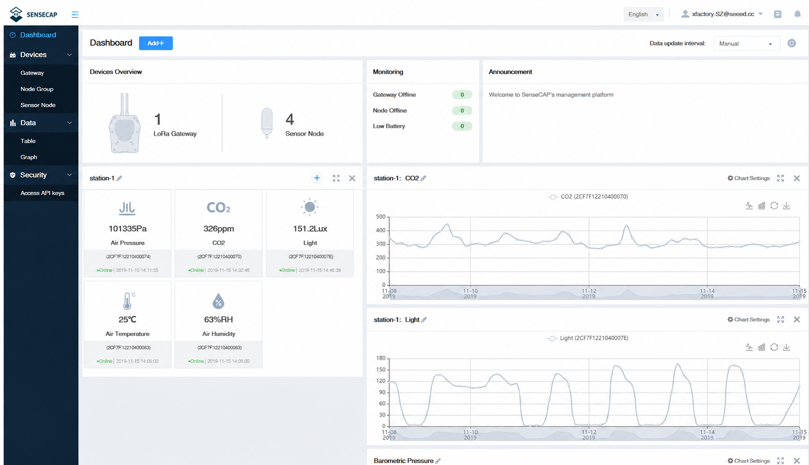

01
Precision Tested, Performance Proven
Individually calibrated and rigorously tested, with a ventilated radiation shield and precision components to deliver accurate, consistent measurements in real-world conditions.
Compact all-in-one weather stations, rugged sensors, and industrial interfaces for agriculture, hydrology, and urban applications.
Individually calibrated and rigorously tested, with a ventilated radiation shield and precision components to deliver accurate, consistent measurements in real-world conditions.
One compact station seamlessly consolidates multiple measurements into a single system, significantly simplifying deployment and maintenance.
Application-specific probes extend monitoring into soil, substrate, water, and exposed infrastructure, combining precise placement, industrial protection, and RS485 or LoRaWAN connectivity.
Connect diverse Modbus sensors through LoRaWAN or 4G, while local caching, backup power, GPS, and remote updates preserve data continuity across unattended sites.
SenseCAP environmental monitoring systems support regional weather mapping and precision agriculture in Hungary, helping growers track temperature, rainfall, humidity, wind, and other field conditions across Central European farmland.

Deployed in Czech vegetable-growing regions, SenseCAP sensors provide localized weather and soil data for zucchini and open-field crop production, supporting irrigation planning, plant health monitoring, and climate-resilient farming.

Across Serbia’s agricultural regions, SenseCAP weather stations help monitor the microclimate surrounding carrots, onions, leafy vegetables, and other field crops, enabling more informed irrigation and crop management decisions.
Measure · Transmit · Visualize · Integrate · Decide



We Are Glad to Be Your Hardware Partner !